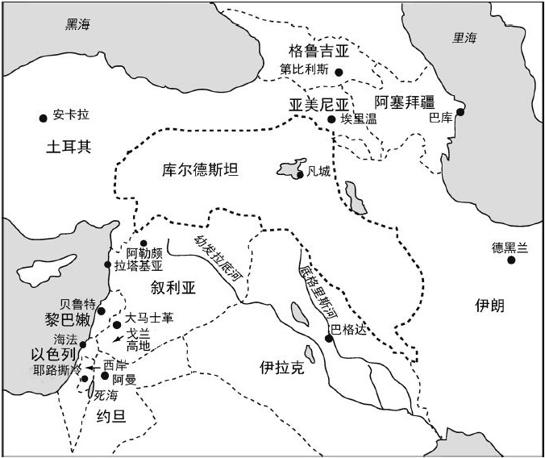
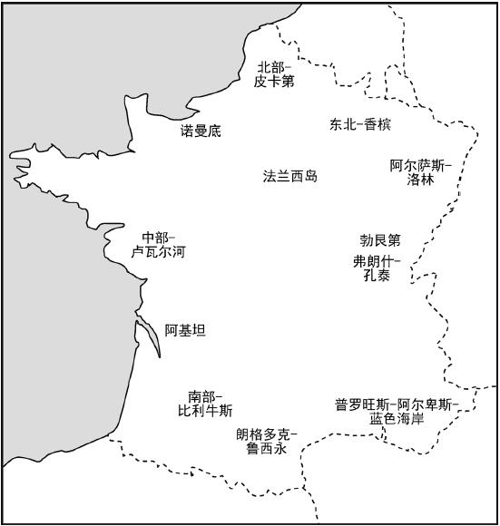
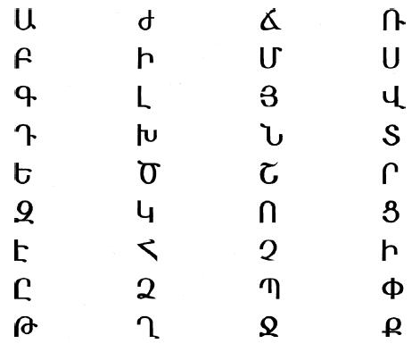

人承认自己是民族一员，只是对自己身份的多种表述之一。形象地说，这只是多层自我意识中的一层。这层意识承认自己和领地内其他人的亲属关系，但不一定说明他与其所属的国家政体有相同的政治和法律立场。
国家决定的法律和政治关系，和领地内有亲属关系和统一文化的民族共同体不同。例如，奥匈帝国和苏联就包括很多民族。而且，民族在没有国家的情况下就已存在，如19世纪的波兰和今天的库尔德斯坦。

图2 库尔德斯坦，因境内主要是库尔德人而命名，但也覆盖了伊朗、伊拉克和土耳其部分疆土
区别民族和国家的必要，并不意味着这两种群体关系之间没有复杂的联系。一方面，民族长期以来通过国家行使并扩大主权而得到稳固。例如，12至16世纪期间法兰西民族的扩张，从卡佩王朝统治下的法兰西岛，到今天法国领土覆盖的西到大西洋、南到比利牛斯山的范围；北边和东边的疆界，长年以来由于爆发战争而变化不定，这常常是民族和国家形成的重要因素。

图3 法国的地区
就法兰西民族而言，巩固民族稳定并不遮掩各种各样、有时很显著的各地区本土观念。事实上，历史上鲜有一个民族只由一个国家管辖，或一个国家只管辖一个民族的情况；世界上很多国家都被清晰划分为不同地区，这些地区有时看上去是“民族前身”，如加拿大魁北克或西班牙巴斯克地区。
尽管如此，国家依然行使主权，并在辖区内制定和实施法律，从而把各地区纳入其法律约束范围。而且，其有效统治还靠在国家权力范围内规范交流媒介，即语言和文字得以实现。例如中国幅员辽阔，地域多样，“中华民族”之所以形成，就是因为早在公元前221年秦始皇统一六国之际，在丞相李斯的主导下，规范了汉字的使用。同样，大约在公元405年，亚美尼亚实现了文字统一。

图4 亚美尼亚字母表36个字母，由梅斯罗普·马什托茨在大约公元405年创立
国家统治中心也推行其他文化政策，例如信仰并在统治范围内传播特定的宗教，常对领地内的文化统一起到巨大作用。这一点在东正教身上表现明显。信仰东正教的每个民族都有自己的圣徒和教堂，如塞尔维亚东正教教堂有圣萨瓦。
然而，相对统一的领地和民族文化的稳固，并非只是国家统治中心对管辖的各类人口推行一种或一系列特殊政策的结果。相反，采纳这些政策，常常需要统治中心有意维护一直存在的传统，如语言、宗教或法律条文。统治中心选择推行的具体政策，很少是突发的、随意的选择，仿若异想天开，即便有些是对以往传统的大胆变革。例如，公元1501年，萨非王朝的伊斯玛仪忠于先前存在的什叶派伊斯兰教传统，把波斯从信奉逊尼派伊斯兰教的奥斯曼帝国划分出去。历史上每个长期稳定存在的国家，都通过对领地有效行使主权，明确维护以往的传统，并对其进行变革。换言之，尽管国家有别于民族，它也促进形成了领地内有亲密关系的共同体，即长期以来形成的民族国家。
国家和民族这两种人类关系模式互相重合的现象，有一个例外，那就是帝国，其中包括很多民族。我们当今目睹的，是欧洲联盟这个帝国的出现。
帝国的扩张受文化的限制并不明显。其疆界常常由军事原因决定。例如，中国于公元前221年始，在蒙恬将军的指挥下建造了长城；罗马帝国在不列颠境内的西北边界是哈德良长城；还有公元732年，查理·马特在都尔附近击败了王子阿卜杜·拉赫曼指挥的穆斯林军队，阻止了伊斯兰的扩张。这种不太有节制的帝国主权扩张，如果威胁到辖域内建立在领地内亲属关系之上的各民族的利益，这些民族就起来反抗，坚持自己的独特文化和政治独立。例如，朱迪亚人在公元66到72年间，后来又在公元132到135年间对罗马帝国统治的反抗，以及20世纪印度对大不列颠帝国的反抗。这种对帝国公开的政治反抗，是因为它剥夺了各民族决定自己事务的自由，比如通过争取自决权所表达出来的。然而，追求独立的民族“自身”究竟具有什么特性，却总是很难说清楚。因为这个民族“自身”正处于形成过程中，如当今在北爱尔兰、克什米尔和马其顿的情形。
独特的文化通过政治自治得到发展，让我们反向思考历史上民族与国家的关系，亦即民族试图变成国家这种情况。从民族到民族国家的变化应该怎样理解？关键是，为什么趋于发生这种变化？
民族试图成立国家，是因为有必要保护和延续其成员的生命，即民族能够通过其代表和机构，在世界范围内保证自身的安全和延续。如果民族国家（因为军事上的失败或其他原因）未能实现这个目标，它便面临着解体的危机。因为该民族的成员会停止效忠自己的民族，之后出现新的效忠对象，从而破坏民族的存在。尽管这种情况会发生，究竟民族形成国家，还是国家促成民族，其实并不重要。因为这两个过程同时存在，只是不同民族具体情况不同而已。
历史上民族国家的形成，不论是从国家到民族，还是从民族到国家，都历经无数种民族情结的纠缠和民族发展的不同进程。如上所述，这些复杂情况的后果之一，就是很多民族国家都包含明显的地区本土情结，甚至包含着其他民族。这再一次说明，围绕领地关系形成的民族，在文化上只是相对统一。对这个问题的探究，还需要探讨社会关系的特征。